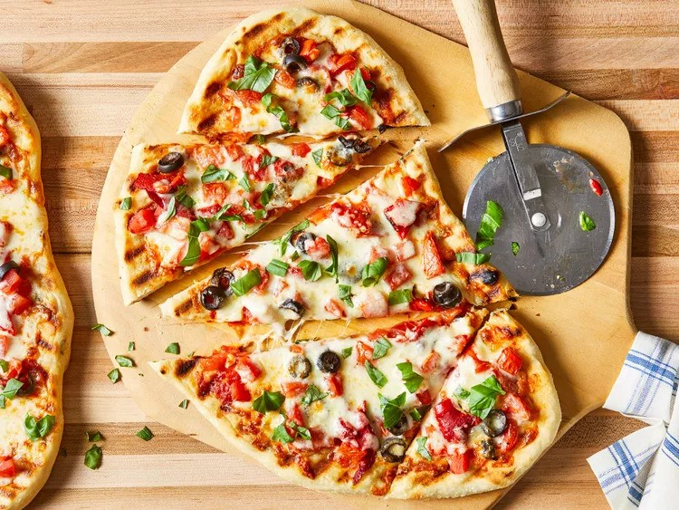

Pizza on the Grill

Pizza on the grill is a fantastic way to make pizza at home. The heat of a hot grill is a perfect match for a professional
pizza oven. Learn the tricks for making and grilling pizza from scratch with this recipe. Feel free to use your favorite
toppings, but keep in mind not to overload the pizza.
Ingredients
Pizza Dough:
- 1 cup warm water (110 degrees F/45 degrees C)
- 1 (.25 ounce) package active dry yeast
- 1 pinch white sugar
- 3 ⅓ cups all-purpose flour
- 1 tablespoon olive oil
- 2 teaspoons kosher salt
- 2 cloves garlic, minced
- 1 tablespoon chopped fresh basil
Garlic Oil:
- ½ cup olive oil
- 1 teaspoon minced garlic
Pizza Toppings
- ¼ cup tomato sauce, divided
- 1 cup chopped tomatoes, divided
- ¼ cup sliced black olives, divided
- ¼ cup roasted red peppers, drained and chopped, divided
- 2 cups shredded mozzarella cheese, divided
- 4 tablespoons chopped fresh basil, divided
Steps
- Gather all ingredients.
- Make dough: Pour warm water into a large bowl; dissolve yeast and sugar in warm water. Let stand until yeast softens
and begins to form a creamy foam, about 5 to 10 minutes.
- Mix in flour, 1 tablespoon olive oil, and salt until dough pulls away from the sides of the bowl.
- Turn onto a lightly floured surface. Knead until smooth, about 8 minutes.
- Place dough in a well-oiled bowl and cover with a damp cloth.
- Set aside to rise until doubled, about 1 hour. Punch down; knead in garlic and basil. Set aside to rise for 1 more hour,
or until doubled again.
- Meanwhile, make garlic oil: Combine 1/2 cup olive oil with minced garlic in a microwave-safe cup or bowl.
Heat for 30 seconds in the microwave.
- Preheat an outdoor grill for high heat; brush the grate with garlic oil.
- Make pizzas: Punch down dough and divide in half. Form each half into an oblong shape 3/8 to 1/2 inch thick.
- Carefully place one piece of dough on the hot grill. Dough will begin to puff almost immediately.
When the bottom crust has lightly browned, turn dough over using two spatulas.
- Working quickly, brush garlic oil over crust.
- Top with 1/2 of each of the following: tomato sauce, chopped tomatoes, olives, red peppers, cheese, and basil.
- Close the lid and cook until cheese melts. Remove from grill and set aside to cool for a few minutes.
Repeat with second piece of dough.
Link to recipe